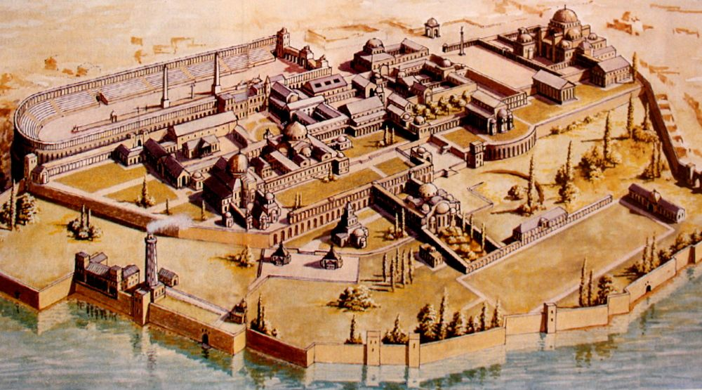
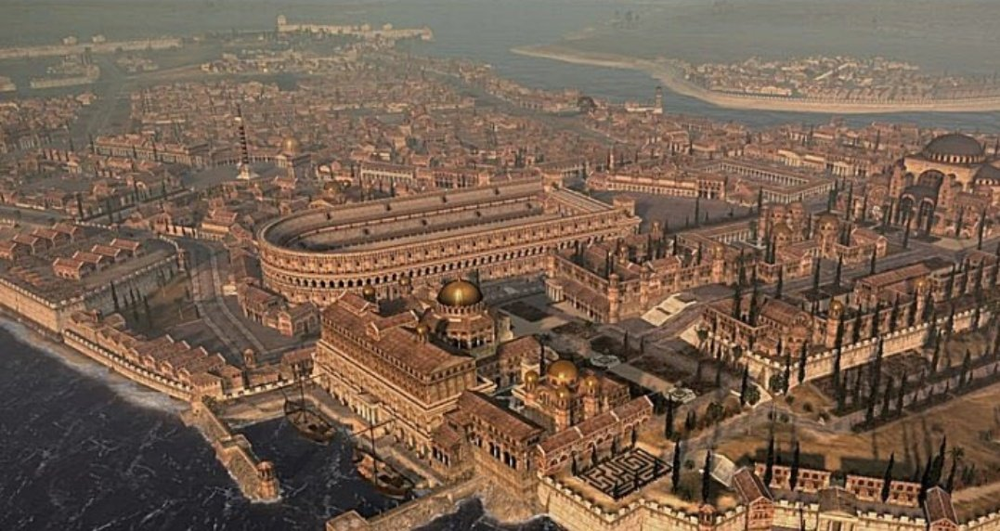
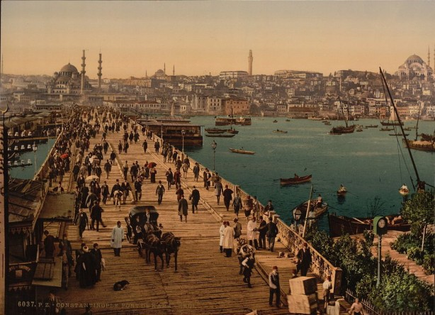
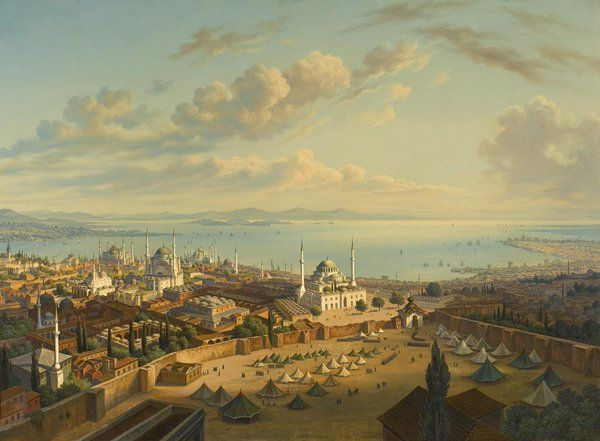
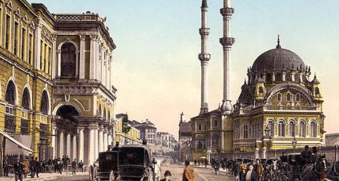
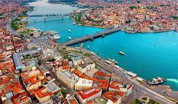

(Byzantion:Antik Topografya) |
BYZANTİONİstanbul tarihi binlerce yıl öncesine dayanır, ama bilinen ilk yerleşim MÖ. 7. yy’da gerçekleşmiştir. O dönemde Antik Yunan yarımadasındaki şehir devletleri arasında Megara isminde bir şehir devleti vardır. Bu şehir devletleri ekonomik ve kültürel olarak o dönemin en ileri devletleridir. Ekonomik gelişimlerindeki en önemli nedenlerden biri, kolonileşme çabalarıdır. Megara şehir devletinin kralı olan Byzas, yeni bir koloni bulmak için Delphi’de bulunan Apollon (Yunan mitolojisindeki bilgelik tanrısı) tapınağına gidip kahine, kolonileşmek için en uygun yerin neresi olduğunu danışır. Kahin kendisine, körler ülkesinin karşısında yer alan topraklara gitmesi gerektiğini söyler. Byzas bu ülkeyi bulmak için yola çıkar. Bugünkü tarihi yarımadaya (Sultanahmet bölgesi) geldiğinde, Anadolu yakasında bugünkü Kadıköy’ün olduğu bölgede bir yerleşim yeri (Chalcedon) olduğunu görür. Bu kadar güzel bir bölge varken insanların karşı kıyıda yerleşim yeri kurmalarından şaşkınlık duyar. Karşıda yaşayan insanların kör olduğunu düşünür. Kahinin söyledikleri aklına gelir ve bulunduğu bölgeye koloni kurar. Bu koloni kralın adını alır veByzantion / Byzantium olur. |

(MS.330 Konstantinopolis) |
KONSTANTİN ve KONSTANTİNOPOLİSByzantion, MS. 4. yy’a kadar önemsiz bir şehir olarak kalır. Byzantion’un kaderi 312 yılında Konstantin’in İmparator olmasıyla değişir. Konstantin’in annesi Helena iyi bir Hristiyan’dır. Oğluna sürekli Hristiyanlıktan bahseder ve onun için dua eder. Konstantin, taht kavgaları sırasındaki son savaşından önce, gördüğü bir görüm dolayısıyla Hristiyanlığa sıcak bakmaya başlar. Sonrasında Hristiyanlara dini özgürlük verecek olan Milano Fermanı’nı imzalar. Bu fermanla Hristiyanların 300 yıl boyunca uğradıkları zulüm sona erer ve bu Konstantin’in büyük başarılarından biridir. Konstantin’in büyük bir projesi daha vardır. Bu proje, imparatorluğun başkentini başka bir yere taşımaktır. Bunun nedeni Roma’nın kuzeyden gelebilecek olan barbar akınlarına karşı savunmasız olmasıdır. Bu doğrultuda, bugünkü İzmit bölgesi olan Nikomedia’yı, Truva’yı ve bugünkü İstanbul olan Byzantion’u düşünür. Konstantin Byzantion’da karar kılar. Byzantion’da karar kılmasındaki en büyük nedenlerinden biri, Byzantion’un konumudur. Marmara Denizi, Boğaz ve Haliç dolayısıyla yarımada olması, Roma gibi yedi tepeden oluşması, ticaret yollarının kontrolünü sağlamaktaki eşsiz avantajı, Konstantin’in kararında etkili olur. Şehrin büyümeye, değişime ve gelişmeye açık olması da başka bir motivasyon olur. Çünkü Roma’nın pagan mirasını yok etmek yerine yeni bir başkenti doğrudan Hristiyan bir şehir olarak inşa etme şansı vardır.Konstantin 330 yılında Roma İmparatorluğu’nun başkentini Byzantion’a taşır ve şehrin ismini Nova Roma yani, Yeni Roma, koyar. Konstantin’in ölümünden sonra şehir Konstantinopolis ismini alır. Konstantinopolis yeni bir çağın yeni başkenti olur. |
.jpeg)
(MS.400 İSTANBUL) |
İSTANBUL ve HRİSTiYANLIK TARİHİİstanbul, 300 yıl süren ve Hristiyanların sürekli zulüm gördüğü karanlık dönemin sonunda yeni bir dönemi temsil eder. Konstantin’le başlayan ve Hristiyan Roma İmparatorlarının yönetimindeki Roma İmparatorluğu’nun başkenti olan İstanbul, Hristiyanlık tarihinde en önemli şehirlerden biri haline gelir. Günümüzde bütün Hristiyanların ortak olarak kabul ettikleri konsillerde (İznik Konsili, Chalcedon (Kadıköy) Konsili ve Konstantinopolis Konsili) İstanbul’un başken olduğu dönemde düzenlenmiştir. İmparator Teodosius döneminde Selanik Fermanı ile Hristiyanlık Roma İmparatorluğu’nun resmi dini haline gelmiştir. Başkent Konstantinopolis ise yavaş yavaş Hristiyanlık merkezine dönüşmüştür. İstanbul’da Roma İmparatorluğu’ndan kalma birçok yapı görebilirsiniz. Bunlardan en önemlileri Valens Kemeri (MS.364), Ayasofya (MS.537), Yerebatan Sarnıcı (MS.532), Aya İrini (MS.537), Galata Kulesi (MS.528)’dir. |

(İstanbul'un Fethi 1453) |
İSTANBUL’UN FETHİ(1453)İstanbul 29 Mayıs 1453 tarihinde, Fatih Sultan Mehmet’in komutanlığında, Osmanlı Ordusu tarafından fethedilmiştir. Fetih sonrasında Ayasofya gibi birçok kilise camiye dönüştürülmüştür. Kiliselerin camiye dönüştürülmesi aşamasında sanata düşkünlüğü bilinen Fatih Sultan Mehmet, bir fermanla mozaik ve diğer sanat eserlerinin yok edilmemesini ve sıva ile örtülmesini buyurur. Artık Osmanlı İmparatorluğu’nun başkenti haline gelen İstanbul, Osmanlı’nın yıkılışına kadar başkent olarak kalır. İstanbul’da Osmanlı Yapıları: İstanbul’da birçok Osmanlı eseri görebilirsiniz. Binlerce cami, imparatorluk binası, kışla, okul, hamam arasında Sultanahmet Camii (1616), Süleymaniye Camii (1557), Topkapı Sarayı (1465), Rumeli Hisarı (1452), Dolmabahçe Sarayı (1856) gibi muhteşem eserler vardır. |
.jpeg)
(1923 İSTANBUL) |
CUMHURİYET DÖNEMİ İSTANBUL(1923)13 Ekim 1923'te Ankara'nın Türkiye Cumhuriyeti'nin başkenti ilan edilmesiyle İstanbul, M.S. 330'dan beri sürdürdüğü başkentlik özelliğini kaybetmiştir. İstanbul 4. yüzyıldan 20. yüzyıla kadar on altı yüzyıl boyunca dünyanın en büyük ve en önemli metropolleri arasında yer almıştır. Avrupa, Asya ve Afrika kıtalarının kesiştiği geniş bir bölgenin tartışmasız tek hakimi olmuş ve bu süreçte dünya tarihini önemli derecede etkilemeyi başarmıştır. İstanbul kesintisiz bin altı yüz yıl boyunca, 330'dan 1922'ye kadar olan dönemde; Roma İmparatorluğu (330-395), Bizans İmparatorluğu (395-1204, 1261-1453), Latin İmparatorluğu (1204-1261) ve Osmanlı İmparatorluğu (1453-1922) olmak üzere dört farklı imparatorluğa başkentlik yapmıştır. Bu imparatorluklardan üçü var oldukları dönemde dünyanın en büyük güç ve iktidar sahibi devletleri olarak tarihe geçmiştir. Hepsinin İstanbul'dan yönetildiği düşünüldüğünde şehrin tarihsel önemi ve değeri anlaşılabilir. 1923'te Ankara'nın başkent olmasıyla köklü başkentlik özelliğini yitiren İstanbul, 4. yüzyıldan 18. yüzyıla kadar on dört yüzyıl boyunca koruduğu her alanda etkin bir 'dünya kenti' olma özelliğini Türkiye Cumhuriyeti'nin kuruluşundan sonra cumhuriyet tarihiyle birlikte tekrar kazanmaya başlamış, günümüzde Orta Doğu ve Avrupa'nın en önemli merkezleri arasında yerini almıştır. |
GEÇMİŞTEN GÜNÜMÜZE İSTANBUL
.jpeg)
(İlk Çağ İSTANBUL) |

(Orta Çağ İSTANBUL) |

(Yeni Çağ İSTANBUL) |

(Yakın Çağ İSTANBUL) |